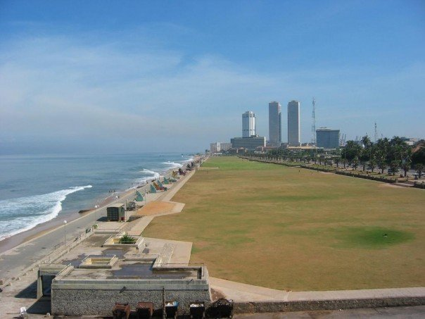
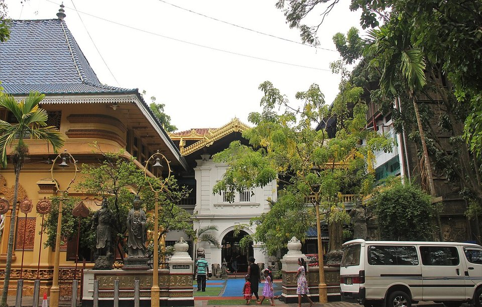
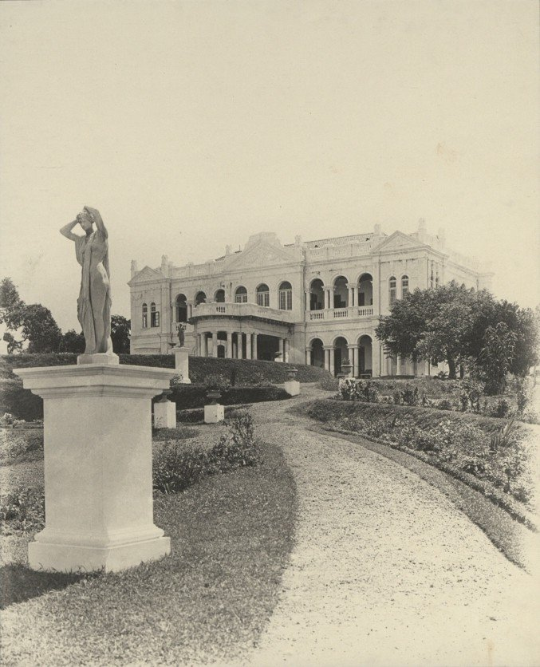
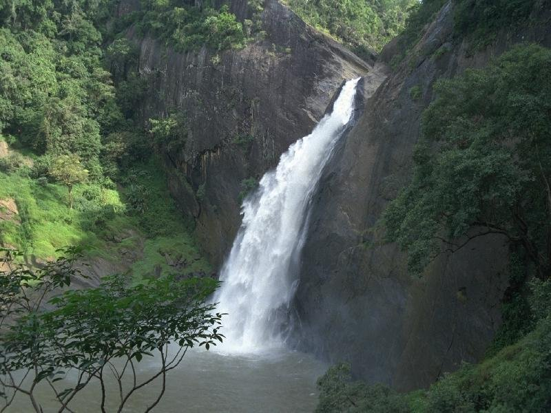
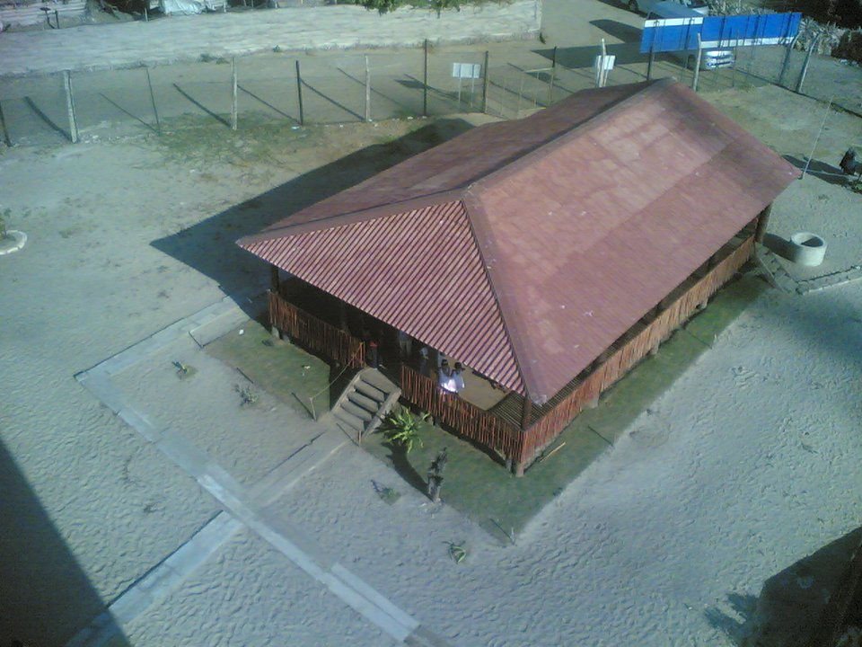
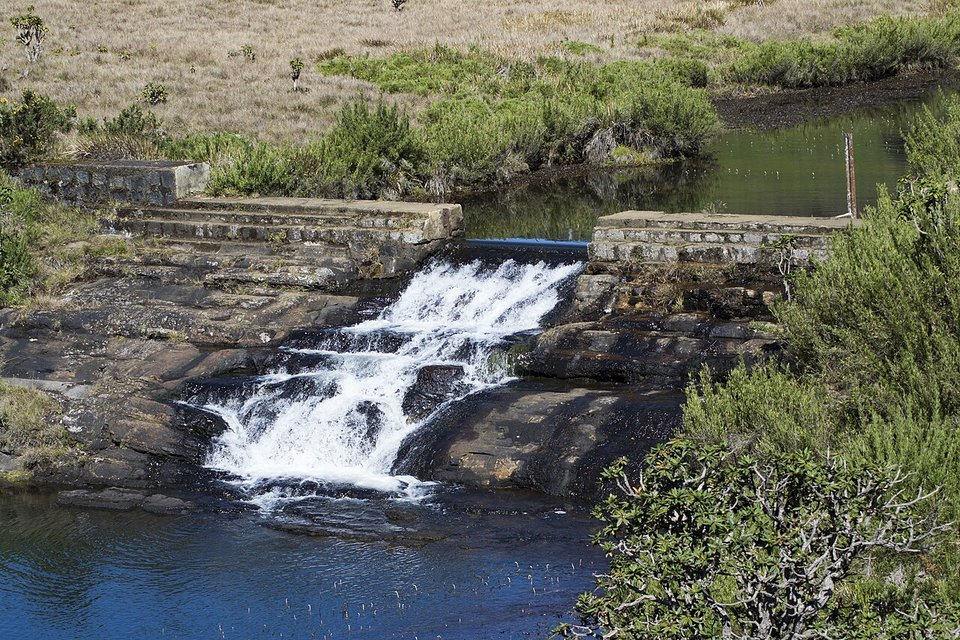
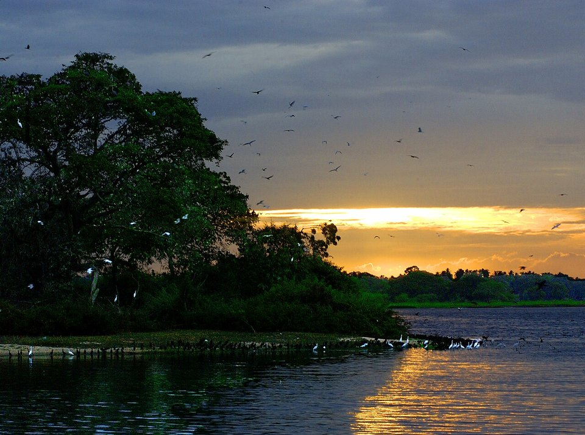
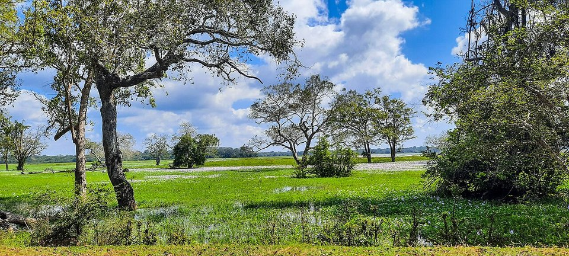
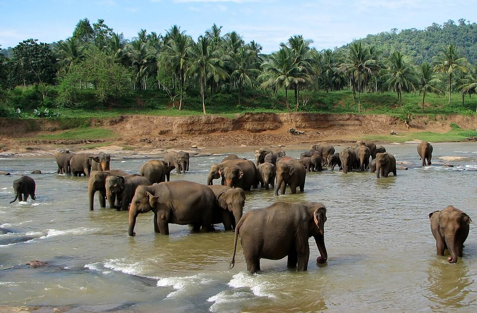
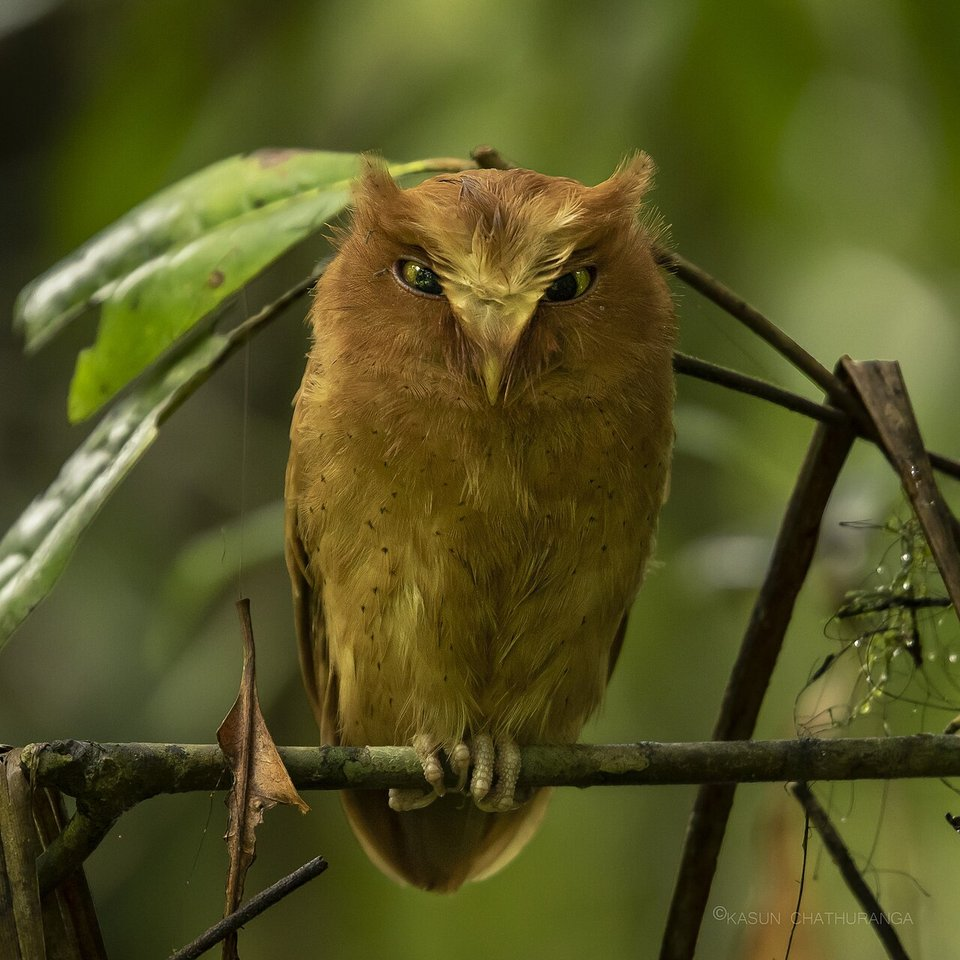

Geographical Wonder
Explore Sri Lanka by Province
From the bustling coastal hub of the Western Province to the cultural mountains of Central and northern archipelagos, discover all nine unique administrative regions.
From golden beaches and mist-covered mountains to ancient kingdoms and breathtaking wildlife, explore an island filled with unforgettable experiences.
From the bustling coastal hub of the Western Province to the cultural mountains of Central and northern archipelagos, discover all nine unique administrative regions.
Every district has its own distinct heritage, geographical character, culinary delights, and adventures.
World-renowned landmarks, iconic UNESCO fortresses, and unforgettable experiences that define a journey to Sri Lanka.
 Historical Sites
Historical Sites
The historic colonial core and bustling bazaar district where Dutch hospital arcades meet vibrant open-air street markets and maritime towers.

Beaches & CoastlinesThe iconic 500-meter oceanfront promenade where Colombo gathers for spectacular Indian Ocean sunsets, kite flying, and street food.

Temples & Religious SitesOne of Colombo's most renowned Buddhist temples, featuring an eclectic museum of artifacts and Geoffrey Bawa's floating Seema Malaka pavilion on Beira Lake.
 Historical Sites
Historical Sites
The stately national monument commemorating Sri Lanka's independence in 1948, surrounded by landscaped gardens and walking avenues.
 Botanical Gardens
Botanical Gardens
Colombo's largest and oldest public park, featuring giant banyan trees, dancing water fountains, walking paths, and a golden Buddha statue.
 Beaches & Coastlines
Beaches & Coastlines
A golden sand beach fringed by seafood restaurants and anchored by the legendary colonial Mount Lavinia Hotel built on a rocky cliff.
Pristine isolated islands, ancient forest monasteries, and uncrowded wilderness viewpoints untouched by mass tourism.
 Forests & Nature Reserves
Forests & Nature Reserves
A serene 18-hectare urban wetland oasis in Sri Jayawardenepura Kotte, featuring elevated wooden boardwalks, butterfly gardens, and rare waterbirds.
 Forests & Nature Reserves
Forests & Nature Reserves
Sri Lanka's largest saline coastal peat bog, harboring over 190 wildlife species, saltwater crocodiles, monitor lizards, and migratory waterbirds.
 Botanical Gardens
Botanical Gardens
A historic 43-acre botanical garden where the first Brazilian Para rubber seedlings were planted in 1876, sparking South Asia's rubber industry.

Historical SitesAn opulent 1900 Edwardian-Indian palace set on a 42-acre estate, featuring Burmese teak carvings, Italian marble floors, and stained glass windows.
 Lakes & Reservoirs
Lakes & Reservoirs
The largest natural freshwater lake in the Western Province, celebrated for water sports, birdwatching boat rides, and secluded eco-resorts.
 Beaches & Coastlines
Beaches & Coastlines
A picturesque sand spit wedged between the roaring Indian Ocean and the tranquil mouth of the Kalu Ganga river, offering spectacular dual water views.
Prehistoric primary rainforests, dramatic cliff precipices, and mountain ranges home to extraordinary endemic biodiversity.
 Waterfalls
Waterfalls
A thunderous 109-meter tiered cascade dropping down sheer rock faces along the scenic Kandy-Nuwara Eliya highway, the 11th highest waterfall in Sri Lanka.
 Waterfalls
Waterfalls
A spectacular 97-meter tiered waterfall dubbed 'The Veil of the Valley', plunging down rocky tiers amidst emerald Ceylon tea plantations.
 Waterfalls
Waterfalls
One of Sri Lanka's widest waterfalls, affectionately known as the 'Little Niagara of Sri Lanka', tumbling in twin cascades through lush tea hills.
 Waterfalls
Waterfalls
A spectacular 25-meter tiered roadside waterfall cascading over oval-shaped concave rock ledges, steeped in the ancient Ramayana legend of King Ravana and Sita.
 Waterfalls
Waterfalls
The second highest waterfall in Sri Lanka (220 meters), famous for its natural upper infinity rock pools where hikers can swim right on the edge of the precipice.

WaterfallsOne of Sri Lanka's most beautiful and powerful waterfalls, a 64-meter roaring cascade that creates a permanent cloud of smoky vapor and mist.
Over 1,340 kilometers of coastline offering tranquil turquoise lagoons, world-tour surf point breaks, and powdery white sand bays.
An enchanting, windswept coral island in the Palk Strait, where wild ponies roam past coral-stone walls, a Dutch fort, and a giant hollow baobab tree.

Islands & ArchipelagosThe westernmost maritime outpost of Sri Lanka, featuring the historic 1915 Talaimannar Pier, round white lighthouse, and sweeping turquoise beaches.
 Islands & Archipelagos
Islands & Archipelagos
The legendary chain of 18 limestone shoals and sand islands stretching 48 kilometers across the Palk Strait from Sri Lanka toward India, steeped in Ramayana mythology.
Grand monolithic rock citadels, colossal brick stupas, and medieval hydraulic irrigation marvels of ancient Sinhalese kings.
Historical Sites
The historic colonial core and bustling bazaar district where Dutch hospital arcades meet vibrant open-air street markets and maritime towers.
Historical Sites
The stately national monument commemorating Sri Lanka's independence in 1948, surrounded by landscaped gardens and walking avenues.
An opulent 1900 Edwardian-Indian palace set on a 42-acre estate, featuring Burmese teak carvings, Italian marble floors, and stained glass windows.
 Ancient Cities
Ancient Cities
The 5th-century royal rock citadel rising 200 meters above the jungle, featuring world-famous frescoes, mirror walls, and the colossal Lion's Paw gateway.
 Ancient Cities
Ancient Cities
The best-preserved cave temple complex in Sri Lanka, housing 153 Buddha statues and 2,100 square meters of painted ceiling murals across five sacred caves.
 Historical Sites
Historical Sites
The historic cave temple where the oral teachings of the Buddha (Tripitaka) were first committed to writing on palm leaves in the 1st century BCE.
One of the greatest biodiversity hotspots on Earth: home to high leopard densities, massive elephant gatherings, and migratory marine giants.

National ParksA windswept highland plateau of cloud forests at 2,100m elevation, terminating at the staggering 880-meter vertical abyss of World's End.

National ParksSri Lanka's premier Ramsar wetland and UNESCO Biosphere Reserve, an internationally acclaimed haven for thousands of greater flamingos and migratory shorebirds.

National ParksA secluded 1,554-hectare national park famous for large herds of wild Asian elephants feeding on beru grass around ancient reservoir wewas.
 National Parks
National Parks
The only national park in Sri Lanka offering boat safaris to witness wild Asian elephants swimming between islands across the vast Senanayake Samudraya.
 National Parks
National Parks
Sri Lanka's largest and oldest national park, famous for 106 natural sand-rimmed rain-fed lakes ('villus'), dense monsoon forests, leopards, and sloth bears.
 National Parks
National Parks
A premier elephant corridor sanctuary centered around an ancient reservoir, where massive elephant herds gather when water levels alternate with Minneriya.
Sri Lanka has over 400 waterfalls nestled amidst mist-shrouded tea plantations and soaring central peaks.
Waterfalls
A thunderous 109-meter tiered cascade dropping down sheer rock faces along the scenic Kandy-Nuwara Eliya highway, the 11th highest waterfall in Sri Lanka.
Waterfalls
A spectacular 97-meter tiered waterfall dubbed 'The Veil of the Valley', plunging down rocky tiers amidst emerald Ceylon tea plantations.
Waterfalls
One of Sri Lanka's widest waterfalls, affectionately known as the 'Little Niagara of Sri Lanka', tumbling in twin cascades through lush tea hills.
Waterfalls
A spectacular 25-meter tiered roadside waterfall cascading over oval-shaped concave rock ledges, steeped in the ancient Ramayana legend of King Ravana and Sita.
Waterfalls
The second highest waterfall in Sri Lanka (220 meters), famous for its natural upper infinity rock pools where hikers can swim right on the edge of the precipice.
One of Sri Lanka's most beautiful and powerful waterfalls, a 64-meter roaring cascade that creates a permanent cloud of smoky vapor and mist.
White water rafting down the Kelani River, world-class kitesurfing in Kalpitiya, and trekking through the Knuckles wilderness.
Sacred sites revered across Buddhism, Hinduism, Islam, and Christianity, including the Temple of the Sacred Tooth Relic and Kataragama.
Immerse yourself in authentic experiences that have flourished for millennia across this multifaceted island.
Tour historic highland estates, witness hand-plucking of the two leaves and a bud, and taste premium single-estate orthodox teas.
Savor authentic Sri Lankan rice and curry, fresh coconut sambol, hoppers, Jaffna crab curry, and true Ceylon cinnamon.
Experience the hypnotic beats of Geta Bera drums and the world-famous Kandy Esala Perahera pageant under the full moon.
Marvel at traditional Dumbara weaving, intricate brass metalwork, devil dance masks of Ambalangoda, and legendary Ceylon blue sapphires.
Carefully curated journey blueprints from quick 3-day express highlights to comprehensive 21-day all-province odysseys.
 3 Days / 2 Nights
3 Days / 2 Nights
A fast-paced introduction to Sri Lanka's vibrant coastal charm and historic Dutch fortress.
 5 Days / 4 Nights
5 Days / 4 Nights
Ancient rock fortresses, sacred Buddhist relics, and emerald green tea hills.
 7 Days / 6 Nights
7 Days / 6 Nights
The quintessential Sri Lanka journey connecting ancient heritage, misty peaks, scenic train, and coastal fortresses.
Sri Lanka enjoys dual monsoon cycles, meaning that when one coast receives rain, the other enjoys brilliant sunshine.
The southwest coast and central hill country enjoy warm, sunny, dry days and calm seas. Ideal for whale watching in Mirissa, surfing in Weligama, climbing Adam's Peak, and exploring Galle Fort.
While monsoon rains touch the southwest, the eastern shores and northern plains bask in brilliant sunshine and glassy waters. Prime time for world-class surfing at Arugam Bay and snorkeling at Pigeon Island.
Continually expanding our verified repository with hidden archaeological sanctuaries and pristine nature spots.
 Wildlife & Safari
Wildlife & Safari
Sri Lanka's premier elephant sanctuary where wild herds are guaranteed on every safari, alongside the world-renowned Elephant Transit Home (ETH) rehabilitation center.
 Caves & Caverns
Caves & Caverns
One of the most important prehistoric human archaeological sites in Asia, yielding skeletal remains of anatomically modern 'Balangoda Man' dating back 38,000 years.

Wildlife & SafariThe world-famous captive elephant sanctuary founded in 1975, where visitors watch a herd of up to 80 Asian elephants bathe together in the Maha Oya river.
 Adventure Tourism
Adventure Tourism
Sri Lanka's adrenaline adventure capital on the rushing Kelani River, famed for Grade II-IV white-water rafting, canyoning, and filming location of 'The Bridge on the River Kwai'.

Caves & CavernsA colossal prehistoric rock shelter near Kitulgala that yielded 30,000-year-old skeletal remains of Balangoda Man and early geometric microlith tools.
 Mountains & Highlands
Mountains & Highlands
A dramatic 798-meter flat-topped table mountain resembling an open book, offering an exhilarating ridge hike, ancient rock caves, and 360-degree vistas.
Key practical information to ensure your Sri Lankan holiday is smooth, memorable, and culturally respectful.
Most nationalities must obtain an Electronic Travel Authorization (ETA) online before arriving in Sri Lanka via the official government portal. Ensure your passport is valid for at least 6 months beyond entry.
The official currency is the Sri Lankan Rupee (LKR). ATMs are widely available across major cities and tourist towns. Credit cards are widely accepted at hotels and restaurants; carry cash for street markets and tuk-tuks.
Sri Lanka has a picturesque railway network connecting Colombo, Kandy, Nuwara Eliya, Ella, and the Southern Coast. Modern Southern and Central Expressways ensure swift travel by private vehicle or highway AC bus.
When visiting Buddhist temples and Hindu kovils, remove shoes and hats. Dress modestly covering shoulders and knees. Never pose for photos with your back turned directly against a Buddha statue.
Standard voltage is 230V (50Hz) using UK-style Type G (three rectangular pins) and Type D plugs. Tourist 4G/5G SIM cards (Dialog, Mobitel) can be purchased immediately at the CMB arrival hall with extensive high-speed island coverage.
Sri Lanka is one of Asia's safest travel destinations with friendly, welcoming locals. Drink filtered or bottled water, apply tropical mosquito repellent, and use sun protection when exploring during midday.